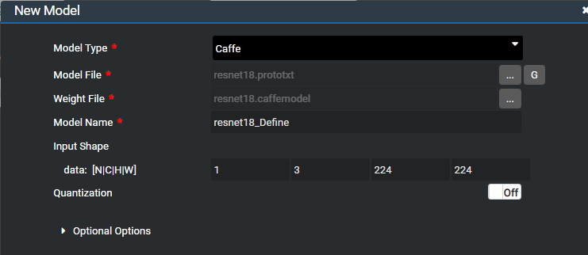
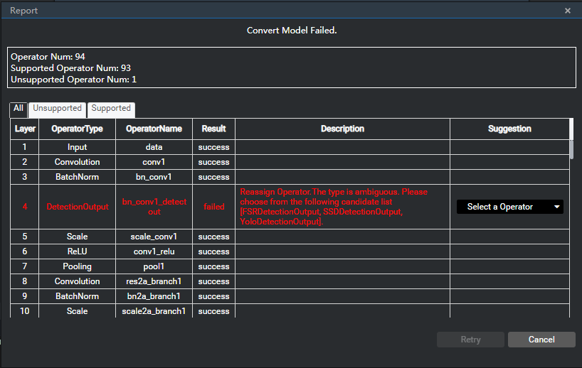
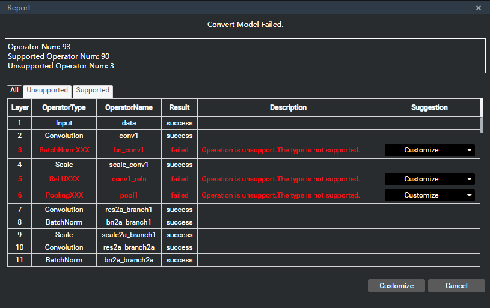
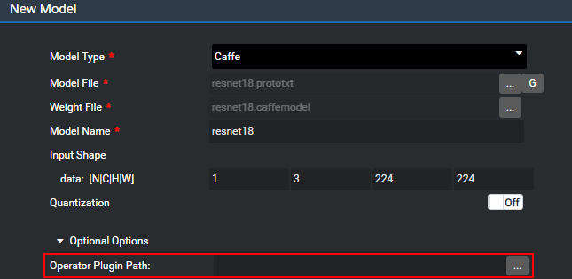

Importing an Offline Model
You can convert an external network model into a model supported by Huawei NPU chips.
- In the Projects Explorer window, double-click the Demo.mind file to open the orchestration canvas.
- Click
 on the right of My Models to add a custom model component.
on the right of My Models to add a custom model component. In the New Model dialog box that is displayed, add an external network model file and set the parameters, as shown in Figure 1.
Figure 1 New Model dialog box
For details, see section 5.3.2 "Adding a Custom Model Component" in the Mind Studio Basic Operations.
After the parameters are set, the ok button becomes available. Click ok to convert the model.
- If the conversion is successful, the conversion success page is displayed. The page contains the path of the model on the server and the size of the model file.
If the conversion fails, a failure report is displayed.
If the failure is due to operator renaming, select the operator, as shown in Figure 2.
Figure 2 Conversion failure report -1
Re-select an operator from the drop-down list box and click Retry, as shown in Figure 3.
Figure 3 Re-selecting an operator

If the failure is due to an unsupported operator, as shown in Figure 4:
Figure 4 Conversion failure report -2
Click Customize to create a project for the operator and customize an operator plug-in. For details, see the Tensor Engine Development Guide .
After the custom operator plug-in is developed, import the offline model again. During the import, select the custom operator plug-in, as shown in Figure 5.
Figure 5 Importing an offline model—selecting a custom plug-in
Click ok.
After the conversion is successful, the model is added to My Models for subsequent orchestration, as shown in Figure 6.